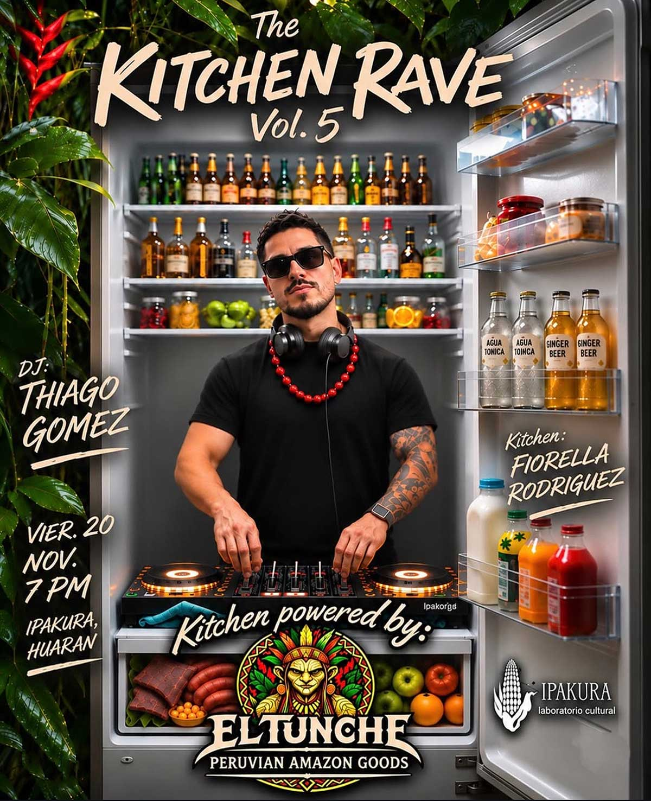

KITCHEN RAVE VOL.5
fecha: 20/11/26 hora: 7pm
lugar: Ipakura,
Huaran, Valle Sagrado de los Incas


🔥🍳 THE KITCHEN RAVE VOL. 5 🌿🔊
Volvemos a la cocina. Esta vez, con algo de Selva 🌴
Fiorella Rodríguez toma los fuegos con un menú de platos con influencia amazónica, mientras nuestro beat chef Thiago Gomez estará sirviendo una mezcla sonora de progressive house deep tropics en el deck🎧
🌴 Cocina impulsada por EL TUNCHE • Peruvian Amazon Goods @eltunche.peru , poniendo sobre la mesa insumos y sabores de la Amazonía peruana.
Si backstage, sin pista aparte. El DJ, la chef, la comida, el baile y tod@s cocinandose juntos en el mismo espacio.
¿Qué hay en el Menú?
🍣 Jungle Makis de cecina
🍌Patacones rellenos con chorizo amazónico y queso
🥔Yuquitas rellenas
👩🏽🍳 Cocina: Fiorella Rodríguez
🎧 Deck: DJ** Thiago Gomez**
👹Powered by: El Tunche • Peruvian Amazon Goods
📅 Viernes 20 Nov.
🕖 7 PM
📍 Ipakura, Huarán
The Kitchen Rave Vol. 5
La cocina se prende. 🔥
LINE-UP:
Thiago Gomez